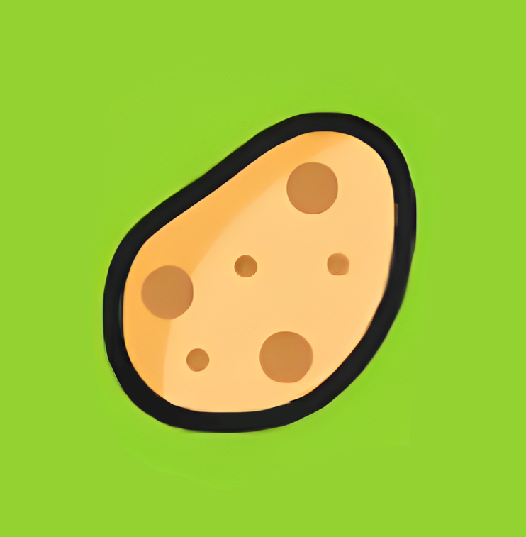

<ion-item id="item-product" color="light" lines="none">
  <ion-avatar slot="start">
    
  </ion-avatar>
  <ion-label>
    Cultivo: {{name}}
    <br>
    Inicio de cultivo: {{date}}
    <br>
    Etapa actual: {{status}}
  </ion-label>
</ion-item>